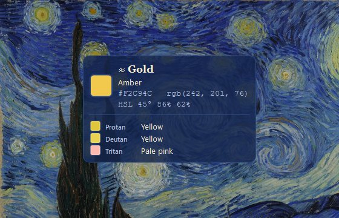
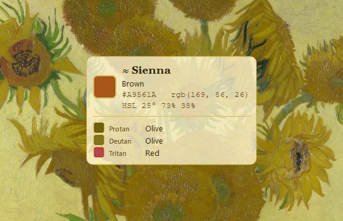
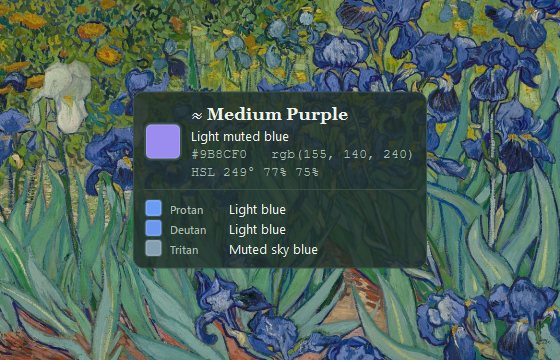
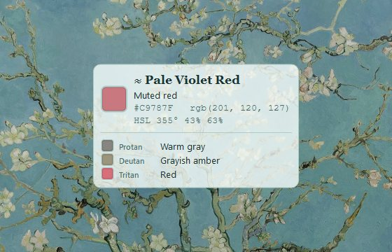

What it does
A color identifier that follows your cursor
Around 1 in 12 men and 1 in 200 women have a color vision deficiency. Colorblind Helper sits in your tray and labels colors anywhere: web pages, photos, charts, games, design tools and paintings.
Color names, instantly
Closest named color (CIEDE2000), HEX and RGB values beside the cursor.
Descriptive mode
Plain words like “light muted teal”, plus HSL, HSV, CMYK and WCAG contrast.
Through other eyes
Protanopia, deuteranopia, tritanopia and achromatopsia simulations.
An artist’s palette
Copied colors become paint dabs. Reuse them, or export to GIMP, Krita or Inkscape.
Live in a painting
Themes from Starry Night, Sunflowers, Irises, Almond Blossom and more.
Out of your way
Click-through overlay, global hotkeys, starts at login if you want, about 1% CPU.
Self-Portrait, 1887 · Art Institute of Chicago
Vincent, through other eyes
A red beard against a green ground makes a natural red–green test. Here it is as each kind of colour vision might see it, simulated with the same model the app uses (Machado et al., 2009).


The gallery
An overlay dressed in Vincent’s colours

The Starry Night

Sunflowers

Irises

Almond Blossom

Choose a painting to live in

Pick which vision types to simulate

Keep every colour you copy
Get started
Three steps
- Download for Windows or macOS and run it. There’s nothing to install.
- Point at any color. The overlay shows its name, HEX and RGB.
- Ctrl+Shift+D for descriptive mode · Ctrl+Shift+C to copy into your palette.
Questions
FAQ
How can a color blind person tell what color something is on screen?
Run Colorblind Helper and move your mouse over anything. A small overlay next to the cursor shows the color’s name (for example “Crimson”), a plain-language description such as “Vivid red”, and its HEX and RGB values.
Is it free?
Yes. It’s free and open source under the MIT license.
Which types of color blindness does it simulate?
Protanopia (red-blind), deuteranopia (green-blind), tritanopia (blue-blind) and achromatopsia (no color). You can switch any combination on or off.
Can color blind artists use it while painting digitally?
Yes. The overlay works over any app, including Photoshop, Krita, Clip Studio and your browser. Copied colors land in a palette you can export as a .gpl file.
Does it work on macOS?
Yes. Open the app, then allow Screen Recording in System Settings → Privacy & Security so it can read the color under the cursor.
Does it collect any data?
No. It runs entirely on your computer, needs no account and makes no network requests.
“Colour expresses something in itself.”— Vincent van Gogh, letter to Theo, 1885